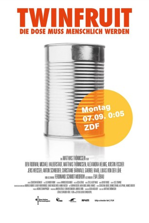

#8079 Twinfruit - Die Dose muss menschlich werden
 
 IMDB-Wertung: 6.7 / 10
IMDB-Wertung: 6.7 / 10  Metascore: 0
Metascore: 0 
Ein Team von Dokumentarfilmern begleitet die Werbeagentur Kleiber & Partner bei ihrer Arbeit. Wir lernen: Für die großen Ideen muss man bereit sein zu kämpfen.\r Die Kreativen der Agentur um Lutz Wolf entwickeln eine Kampagne, die den deutschen Werbefilm für immer verändern soll. So frisch, knackig und tief menschlich wurden Dosenfrüchte noch nie inszeniert. Werber wissen: Auf die Idee kommt es an. Die Idee muss fliegen.
Jahr: 2015
Dauer: 72 Minuten
FSK:
Land: Deutschland Studio: Alive Vertrieb und MarketingTonspuren:
Untertitel:
Auflösung: 1080p (1920x1080) Größe: 4259 MB
Genre: Komödie
Regisseur: Matthias Thönnissen
Drehbuch: Matthias Thönnissen
Soundtrack: Oliver Thiede
Darsteller:
 Eva Löbau als Erdbeere
Eva Löbau als Erdbeere- Christiane Bärwald als Valerie Schneider
- Kirstin Fischer als Konstanze Wiegand
- Michael Halberstadt als Gunnar Kleiber
- Alexandra Helmig als Sabine Gerstenberg
- Gabriel Raab als Müller
- Ben Rodrian als Lutz Wolf
- Anton Schneider als Wolter Lüttke
- Matthias Thönnissen als Adrian Kosinovic
- Jens Weisser als Karl-Heinz Hansen
Datei: X:\2015(N-Z)\Twinfruit - Die Dose muss menschlich werden (2015, FSK, 1920x1080).mkv seit 21.01.2018
Festplatte: HD 2015(A-Z)
 Es gibt insgesamt 161 Filme in der Gruppe '2015(N-Z)'
Es gibt insgesamt 161 Filme in der Gruppe '2015(N-Z)'